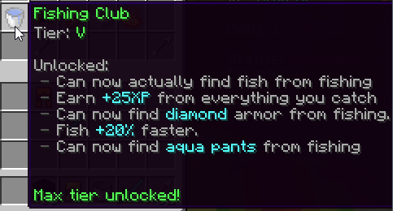

|
The Pit 0.3.6 - Fishing Club Patch
|
|  |
| A screenshot of the Fishing Club renown upgrade. |
| Release Date | July 9th, 2018 |
| Forums Approval | 98.8% |
| Forums Author | Minikloon |
| ← The Pit 0.3.5 —
Pizza Patch
→
|
The Pit 0.3.6, also known as the Fishing Club Patch, was the fifth major version of the Hypixel Pit. It introduced the Fishing Club renown upgrade, the Quick Maths minor event, and other minor changes.
The minor event Quick Maths was introduced. When the event was created, it was quoted to give 200 XP and 1,000 gold for being one of the first five players to solve the problem correctly.
Balance changes:
- (↓) Increased the cooldown on the Telebow and Assassin enchantments.
- (↓) Increased the maximum amount of damage players could take with Singularity III (0.5♥︎ → 1♥︎).
- (↓) Nerfed the blocked damage amount from Bruiser.
- (↓) Decreased Lodbrok III's drop rate (100% → 75%).
Other changes:
- Fixed a bug involving Kung Fu Knowledge's Speed II and damage.
- Added a feature that replaces the player's iron sword or axe when they purchase a diamond weapon.
- Fixed being able to eat swords in Rage Pit.
- Ensured Impatient stops outside of spawn.
- Fixed spectator items clearing hard-earned items.
- Fixed golden apples not giving absorption.
- Disabled block placing during the Beast event.
- Fixed the Rambo perk reducing players' health to 4♥︎ instead of 8♥︎.
- Fixed gaining XP by shooting yourself with Recon.
- Fixed Strike Gold and Critically Rich enchantments.
- Fixed a visual bug with the Sweaty enchantment.
- Fixed Instaboom TNT, placing TNT, and an exploit that made TNT explode blocks.
- Fixed the Lifesteal III enchantment displaying it healed 113% of damage dealt instead of 13%.
- Fixed pants with the Self-checkout enchantment working when they were unequipped.
- Fixed Executioner confusing the victim and the killer.
- Added perk items clearing when setting a perk slot to "No perk."
- Fixed major events resetting killstreaks due to players getting sent into spawn.
- Fixed picking up leggings auto-equipping over other kinds of pants.
- Fixed Bounty Hunter destroying the player's currently-equipped pants.
- Disabled clicking in the crafting table to avoid exploits.
- Fixed an exploit to drop bazaar pants[unclear] from kills.
- Made fished diamond swords unbreakable.
- Fixed minor events continuing beyond their expected duration.
- Disabled being able to complete contract objectives during major events.
- Rebalanced mystic item drop rates from Mysticism.
- Removed ConnorLinfoot's Power CCC homing bows from the game.
- Fixed water and lava buckets being able to destroy transparent blocks, such as grass and snow layers, if the fluid was placed on an adjacent face.
- Increased game performance.